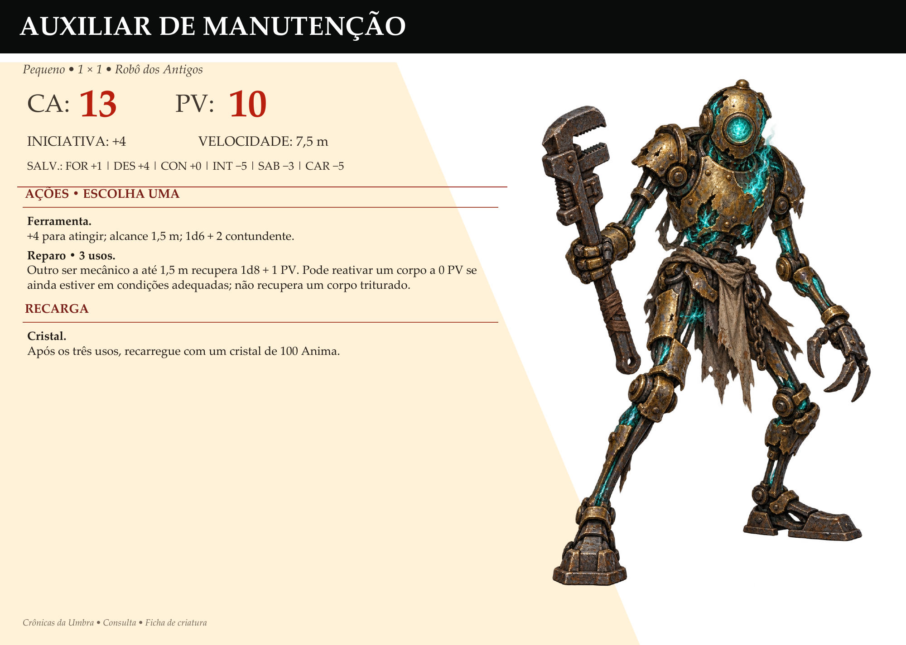

Cinco auxiliares pequenos apoiam as tarefas do Templo, sem bônus automático de produção ou renda. Três foram recolhidos primeiro; um caiu e ficou inutilizado, e outros três completaram o grupo no fim da expedição.
Creature card

Ver regras em texto
Ficha de consulta | CA | PV por auxiliar | Iniciativa | Deslocamento | |---|---|---|---| | 13 | 10 | +4 | 7,5 m; sem voo | Pequeno. Salvaguardas: FOR +1; DES +4; CON +0; INT −5; SAB −3; CAR −5. Nenhuma resistência ou imunidade adicional definida para este bloco. Ações · escolher uma Ferramenta: +4 para atingir; alcance 1,5 m; 1d6+2 contundente. Um ataque por turno. Reparo: ação em outro ser mecânico adjacente, a 1,5 m; recupera 1d8+1 PV. Três usos por auxiliar; depois, recarregar com um cristal de 100 Anima. Pode reativar um corpo a 0 PV ainda em condições adequadas; não recupera um corpo triturado.